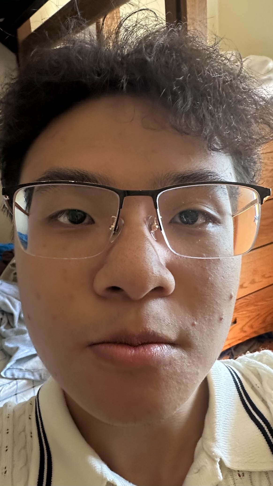
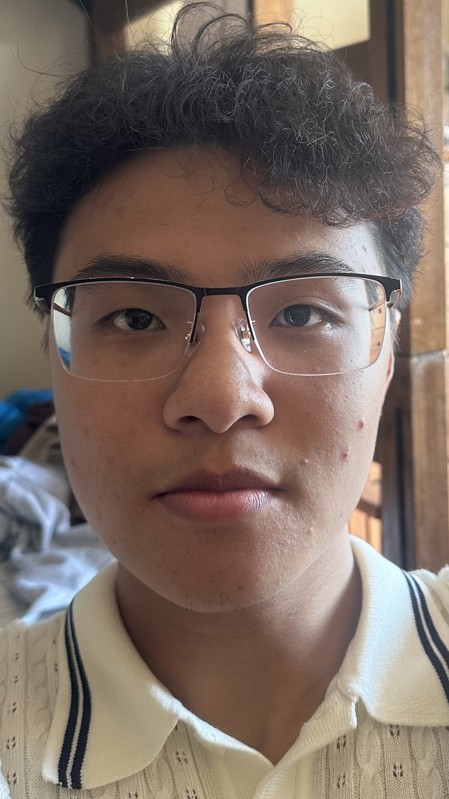

01
The Wrong Way vs. The Right Way
An exploration of how focal length affects portrait photography. Shot on iPhone 14 Pro.

0.5×
13mm equivalent

1×
24mm equivalent

2×
48mm equivalent
3×
77mm equivalent
02
Architectural Perspective Compression
Haas School of Business. Examining how focal length affects spatial relationships in architecture.

Ultra-Wide
13mm • Expanded
Standard
24mm • Natural

Telephoto
77mm • Compressed
03
The Dolly Zoom
Vertigo Effect
A cinematographic technique where the camera moves while simultaneously adjusting the zoom to maintain subject size.
Made famous by Alfred Hitchcock, this effect creates a disorienting visual experience that has become a staple of modern filmmaking.
- Camera moves backward
- Lens zooms in proportionally
- Subject maintains size
- Background shifts dramatically